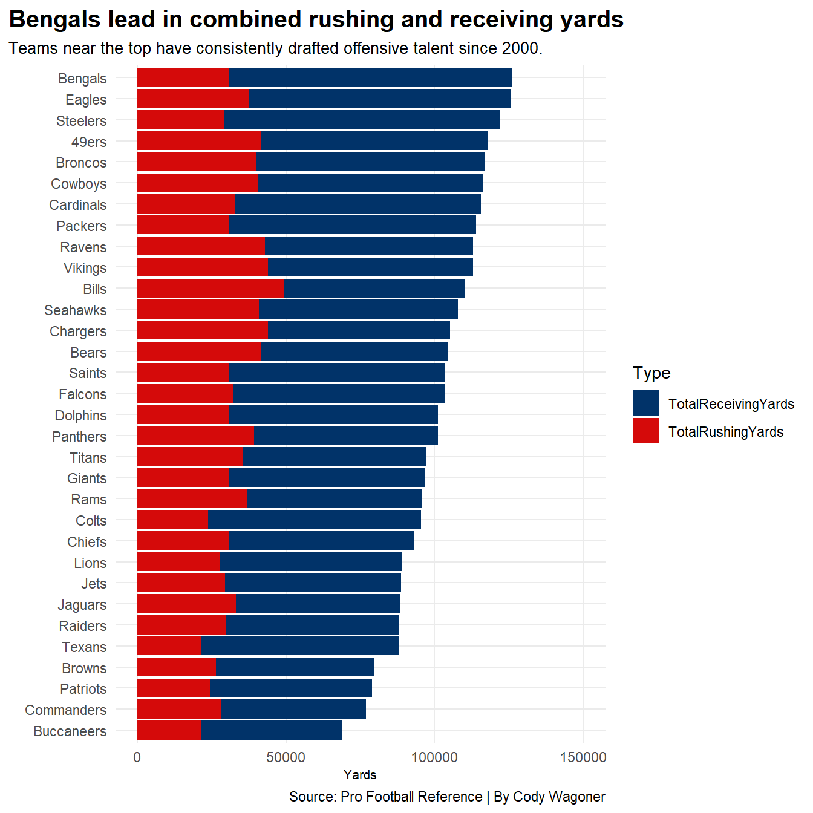
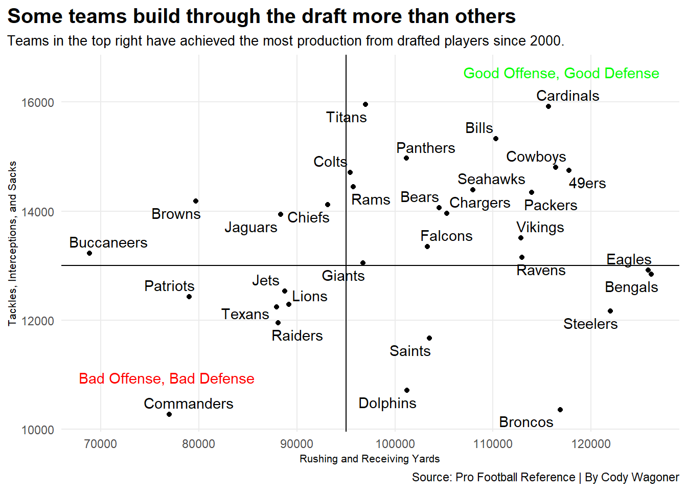

Although not entirely, the NFL draft plays an influential role in determining every team’s success each season. While teams can also build through free agency, the NFL draft helps determine how successful a team will be for the foreseeable future.
A great measure of the success of each individual draft pick is drafted approximate value (drAV). This means the value each draft pick provided to the team that drafted them. This helps determine how successful each individual draft pick was.
The first thing we will look at is every team’s accumulated drafted approximate value since 2000. This combines every draft from the last 25 years.
The Green Bay Packers come out on top, followed by the Pittsburgh Steelers, Baltimore Ravens, Dallas Cowboys, and New England Patriots. Each of these top five teams has sustained consistent success within the last 25 years, and it’s evident their success in the draft has played a factor.
However, without a talented offense, no points can be scored. Let’s now look at how every team performed when drafting on the offensive side of the ball.
This chart measures the accumulated rushing and receiving yards gained by draft picks of every team.
Code
rushrecdrafts <- drafts |>group_by(Mascot) |>summarise(TotalRushingYards =sum(RuYds, na.rm =TRUE),TotalReceivingYards =sum(ReYds, na.rm =TRUE))rushrec <- rushrecdrafts |>pivot_longer(cols=starts_with("TotalR"), names_to="Type", values_to="Yards")ggplot() +geom_bar(data=rushrec, aes(x=reorder(Mascot, Yards), weight=Yards, fill=Type)) +coord_flip() +scale_y_continuous(limits =c(0, 150000)) +scale_fill_manual(values=c("#013369", "#d50a0a")) +labs(title ="Bengals lead in combined rushing and receiving yards",subtitle ="Teams near the top have consistently drafted offensive talent since 2000.",caption ="Source: Pro Football Reference | By Cody Wagoner",x ="",y ="Yards") +theme_minimal()+theme(plot.title =element_text(size =15, face ="bold"),axis.title =element_text(size =8), plot.subtitle =element_text(size=10), panel.grid.minor =element_blank(),plot.title.position ="plot" )

The Cincinnati Bengals lead here, followed closely by the Philadelphia Eagles. Keep in mind that this chart excludes passing yards.
Notice the Patriots dropping near the bottom after ranking top five in drafted approximate value. This could indicate they significantly used free agency to build their offensive skill positions.
The next chart goes a step further by showing both offensive and defensive production by every team’s drafted players in the last 25 years.
Tackles, interceptions, and sacks were used to measure every team’s drafted players’ success defensively, while rushing and receiving yards were used to measure offensive success.
Code
offdefdrafts <- drafts |>group_by(Mascot) |>summarise(TotalRushingYards =sum(RuYds, na.rm =TRUE),TotalReceivingYards =sum(ReYds, na.rm =TRUE),TotalTackles =sum(Solo, na.rm =TRUE),TotalInts =sum(DefInt, na.rm =TRUE),TotalSacks =sum(Sk, na.rm =TRUE)) |>mutate(Offense = TotalRushingYards + TotalReceivingYards,Defense = TotalTackles + TotalInts + TotalSacks )ggplot() +geom_point(data=offdefdrafts, aes(x=Offense, y=Defense)) +labs(title ="Some teams build through the draft more than others",subtitle ="Teams in the top right have achieved the most production from drafted players since 2000.",caption ="Source: Pro Football Reference | By Cody Wagoner",x ="Rushing and Receiving Yards",y ="Tackles, Interceptions, and Sacks") +geom_vline(xintercept =95000) +geom_hline(yintercept =13000) +geom_text(aes(x=76700, y=10950, label="Bad Offense, Bad Defense"), color="red") +geom_text(aes(x=117000, y=16550, label="Good Offense, Good Defense"), color="green") +geom_text_repel(data=offdefdrafts, aes(x=Offense, y=Defense, label=Mascot)) +theme_minimal() +theme(plot.title =element_text(size =15, face ="bold"),axis.title =element_text(size =8), plot.subtitle =element_text(size=10), panel.grid.minor =element_blank(),plot.title.position ="plot" )

A team being in the bottom left doesn’t necessarily mean it was unsuccessful over the last 25 years. It may mean the team’s production came from players whom the team did not draft.
For example, for the Patriots, Wes Welker and Randy Moss were two highly productive receivers, and Corey Dillon and LeGarrette Blount were two highly productive running backs for the team in the last two decades. However, New England did not draft any of these players who contributed greatly to the team’s success during their tenure as Patriots.
The many consistently successful teams, including the Packers, Cowboys, and 49ers, in the top right region of this chart prove that the draft is essential in determining a team’s success. However, the Patriots’ example leaves the door open for teams to foster success in other ways.